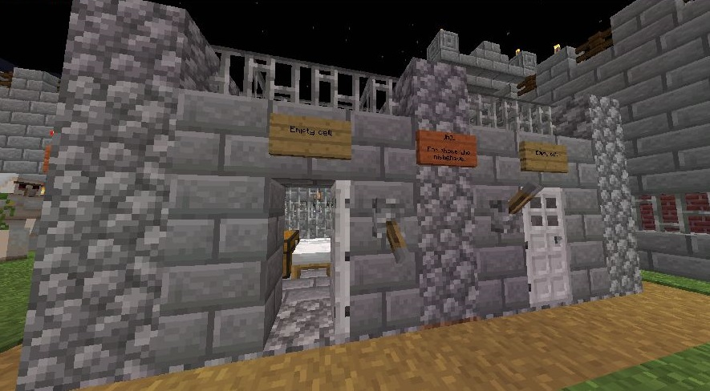

Rules and Code of Conduct
SwishCraft is a friendly environment for serious players
Click Here to report Offensive or Abusive Behavior
Player Enforcement
- Players can police themselves by jailing players via a vote
- Use the chat window, and prepend a forward-slash (/) to issue commands
- To initiate a vote
/jail vote <playername>
- Once a vote is started, other players have 60 seconds to vote yes or no
/jail vote <playername> yes
/jail vote <playername> no
- The Jail is located in Ft Kickass. Offenders voted in will serve 30 minutes IRL time (a day and a half in-game)
- Jailed players cannot chat or issue commands
Punishable Behavior
Offenses that will result in punitive actions include, but are not limited to:
- Bullying
- Racist/Hate Speech
- Mysogyny
- Trolling
- Spamming
- Cheating
- Advertising
- Solicitation
Admins will be paying attention, and players may vote to punish other players. If you behave poorly, you will be dealt with... so please, don't be a dick.
Code of Conduct
Now, I understand shit-talking is an important part of any battle ground, and I'm not trying to be anyone's Mommy here... after all, this server is intended for grown-ups (if it were a movie, it'd be rated R for violence and language), but there are certain things I just don't want on my server, and the type of players I'm looking for will agree. There's no need for racist hate speech, or anti-LBGTQ bullshit, or political preaching or religious recruiting. There's no need to behave like children (even if you are a children...). Really, man... there's just no need to be a dick.
For example... a comment like "Ha ha fag! Suck my balls!" uttered to a defeated enemy to crow in glory is perfectly acceptable... however, hate-fueled statements like "God hates fags" or "Die faggit" will get you perma-banned.
Here's another one... if you build a 300m tall gigantic penis, I will come and gaze in wonder... but if you build so much as a 13 block swaztika, I'll be happy to fuckin' ban your nazi bitch-ass in a heartbeat.
Really, it's all about context. Use good judgement when talking shit and doing shit, and when reading the shit-talk of others. Be careful not to go on witch hunts... but at the same time, don't tolerate hate.
Certain words are banned from use already... you know what they are. Please don't try to circumvent them by using other characters, (like "$" instead of "s" and such). If something you type is censored, roll with it... and maybe not talk that particular shit anymore.